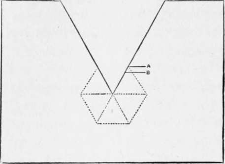
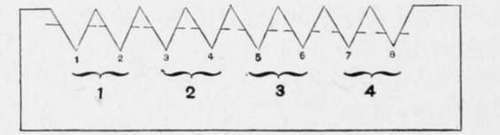
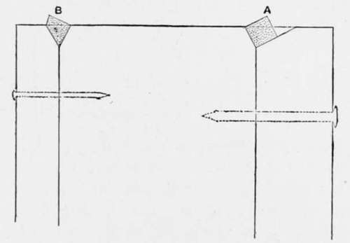
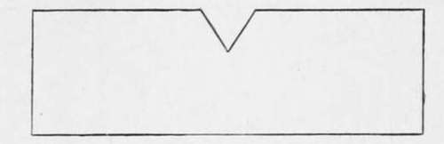
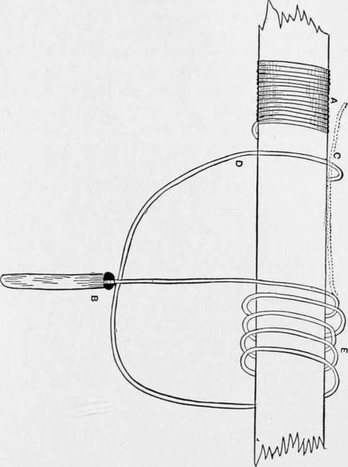

How To Make A Fishing Rod. Part 4
Description
This section is from the book "American Game Fishes", by W. A. Perry. Also available from Amazon: American Game Fishes: Their Habits, Habitat, and Peculiarities; How, When, and Where to Angle for Them.
How To Make A Fishing Rod. Part 4
The planing of the strips to the exact pattern, so that each one 'tapers truly, will tax all the care and patience of the operator. Having squared his six strips, he must make a four-foot block of hard wood with grooves of the angle shown in fig. 28. This had better be made in sections as shown, and joined together. In this case they can be planed to the correct angle with the planes you have; but if you do not mind the expense, you can, of course, have planes made to cut the grooves you want. If you are going in for making many rods this will be the better plan-it is not necessary.
Fig. 26.
Fig. 27.
however, to the tyro. The groove must be of a depth to suit the plan of the rod, and should be of slightly decreasing depth to form the taper. Assuming that the grooved block is ready, lay the square strip in it and plane away, with great care, all that part above the dotted line in fig. 28, A. Having done this, place it in the left-hand groove, at B, and again plane it-of course not touching the enamel; and the result should be as shown at fig. 25.
Of course, the shape will not be quite correct. Take now a piece of saw-steel, and file with a trianuglar file several processes, like that shown in fig. 29. If you go to the trouble of marking them, as in fig. 27, so much the better for your correctness of angle and truth of taper. Place the strips together as they are destined to be in the rod, every now and then, and so adjust them; but remember, the rod must be solid when glued, and to this end each section must fit its neighbor exactly. Use the file frequently, and always at right-angles to the grain, in fitting. Precisely the same process is to be gone through in regard to the other joints, with the addition of ever-increasing care as to detail, till the three or four joints are got out, and are ready for the next process, namely, gluing together.
Fig. 28.
A word as to the glue: Le Page's glue is the best I know, but the ordinary Russian fish-glue is very good. Be careful to use it hot, and let your strips be warm also. Apply the glue with a brush rapidly, and glue in pairs first, and then the three pairs altogether next. Do this as quickly as possible, and then take a long piece of strong twine and wrap it rapidly and tightly around the strips in the same way as in the splicing of a Castle-Convill rod (see fig. 3), bringing the line back in a double coil, as shown at fig. 3, by the dotted lines. Let the joints dry in a warm room thoroughly. Any excess of glue on the outside can be scraped off when the wrapping: is removed.
The most difficult part of the making of a split bamboo is now completed, and if you have been conscientious and thorough you will at least have a strong and even elegant rod, sufficiently enduring and presentable to encourage you to make another.
But the rod is as yet far from finished. After smoothing it off, the next operation is the ferruling. For the details of this you must refer back to what has already been said.
Fig. 29.
It is specially necessary to be careful with them, and to make them a good fit, to prevent water getting into the rod and so loosening it-this is of very rare occurrence, however. Having fitted the ferrules to your satisfaction, joint the rod and try it as recommended for the whole-wood rod; a little may be taken off either end, if you find the balance not quite to your liking, but no other alteration can be made.
The winding-by which is meant the whipping of silk thread at intervals up the rod to increase its strength-and the tying on of rings or guides-is a pleasant task, though requiring patience. The chief thing about it is the knowledge of how to tie off, or in other words, form the invisible knot. If the learner will carefully look over the diagram (fig. 30) he will be able to puzzle this task out without difficulty. Let him take a piece of string and a stick and hold it in the left hand with the thumb uppermost. Now pass one end of the string under it with that end pointing to the right. Now bring the twine down under, up, and over toward him and over the end of the twine-placing the thumb firmly on it. Repeat this two or three times. Now to fasten off with the invisible knot. Still holding the thumb at A, insert the end of the thread in a quill and retain it there by means of a plug (B). Now pass the thread in a large loop to the right, and drop the quill over in coils as shown, three or four times; finally bring it up to C as shown in the dotted line. Now wind D side by side with A and over C, not too tightly, and as you turn the stick round to do so you will find all the coils (E) unwind, being transferred as a continuation of A. C will be laid underneath them, and all you have to do is to pull gently but firmly on C, and the knot is made.
Fig. 30.
The whipping should be at intervals of a few inches all down the rod, and may be of any-colored silk, waxed with either of the transparent waxes, or even with the cement given for ferrules.
Necessarily in the foregoing a great deal has been left to the reader's ingenuity. Mechanical operations are the very hardest of all to describe, but as each process is explained in exact accordance with my own first efforts, I am induced to think this chapter will be sufficiently comprehensive and detailed to be useful. I once visited Alcock's factory, at Redditch, where five hundred people are regularly at work turning out tackle, and saw the chief Salmon-fly tier turning out most beautifully finished "Jock Scots'" at a rate that astounded me. "What is the secret of such fly-making?" I asked. The answer came, paraphrasing Demosthenes' famous reply as to the secret of oratory: "Practice, practice, practice!" So I say, in concluding this chapter. Do not be discouraged by failure, by the tediousness and seeming difficulty of the task, by the possibly clumsy look of the finished rod, or by the lack of proportion. The secret, whole and entire, of pleasurable rod-making-in its facility and the beauty and satisfaction of the result, is "practice, practice, practice."
Continue to: